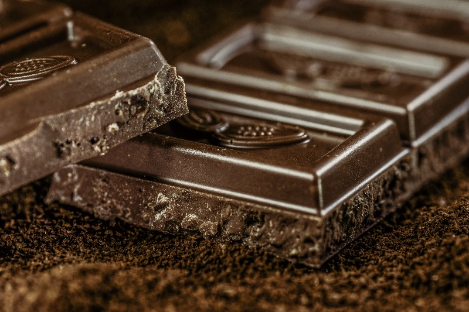

Chocolate can be used almost everywhere. You can bake with it, drink it, eat it, use it as a flavor, etc. It is one of the most popular food types and flavors in the world.
Chocolate started around 1900 BC in Mesoamerica, being served as bitter drinks. The Mayans worshipped a god of cacao and reserved chocolate for rulers, warriors, priests and nobles at sacred ceremonies. When the Aztecs began to dominate Mesoamerica in the 14th century, they craved cacao beans, which could not be grown in the dry highlands of central Mexico that were the heart of their civilization. The Aztecs traded with the Mayans for cocao beans, which were so coveted that they were used as currency.
After Spanish conquest of the Aztecs, chocolate was imported to Spain and spread among royal courts. Although the Spanish sweetened the bitter drink, one thing remained unchanged: chocolate was still a delectable symbol of luxury, wealth and power.
In 1828, Coenraad Johannes van Houten, a Dutch chemist, invented the cocoa press. The cocoa press could remove half the natural cacao butter from cocoa beans, pulverizing what remained into a fine powder and treating the mixture with alkaline salts to cut the bitter taste. His product became known as “Dutch cocoa”, and it soon led to the creation of solid chocolate. Chocolate could now be used as a confection and more affordable.
In 1847, British chocolate company J.S. Fry & Sons created the first solid edible chocolate bar from cocoa butter, cocoa powder and sugar. Rodolphe Lindt’s 1879 invention of the conching machine, which produced chocolate with a velvety texture and superior taste, and other advances allowed for the mass production of smooth, creamy milk chocolate on factory assembly lines. Familiar names of the family-owned companies such as Cadbury, Mars and Hershey ushered in a chocolate boom in the late 1800s and early 1900s. Today, the average American consumes 12 lbs. of chocolate each year, and more than $75 billion worldwide is spent on chocolate annually.